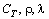

|
В математических моделях физико-химических и химико-технологических процессов могут
встречаться не только одномерные и двумерные дифференциальные уравнения, но и трёхмерные. В качестве
примера рассмотрим уравнение теплопроводности для нестационарного трёхмерного температурного поля:
где Т - температура;  - теплоёмкость, плотность и теплопроводность материала;
x, y, z - пространственные координаты; q - внутренний источник (сток) теплоты.
Данное уравнение является трёхмерным дифференциальным уравнением
параболического типа. Его трёхмерность обусловлена тем, что температура Т - функция четырёх переменных,
три из которых являются пространственными координатами:
Уравнение вихря скорости, являющееся преобразованием уравнения Навье-Стокса,
- ещё один пример трёхмерного дифференциального уравнения параболического типа:
Методы численного решения трёхмерных дифференциальных уравнений
параболического типа во многом схожи с методами численного решения двумерных дифференциальных
уравнений параболического типа. Однако между ними имеются и отличия, обусловленные более высокой размерностью
разностной сетки, что оказывает влияние и на условие устойчивости явной разностной схемы, и на методику
расщепления шага по времени при использовании метода дробных шагов, и на увеличение сложности расчётных
алгоритмов. Как и в случае двумерных задач, рассмотрим сначала методы численного решения трёхмерных
дифференциальных уравнений параболического типа, не содержащих производных по координатам первого порядка;
обобщённый подход к решению трёхмерных дифференциальных уравнений параболического типа, которые могут
содержать первые производные по координатам, представлен в конце главы.
|